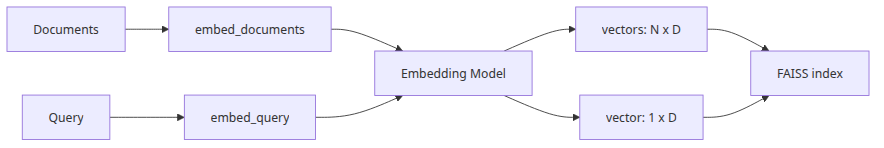
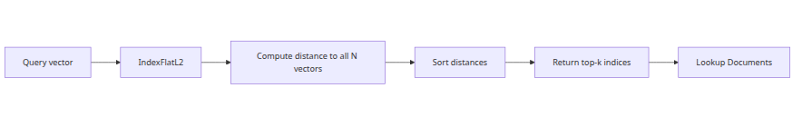
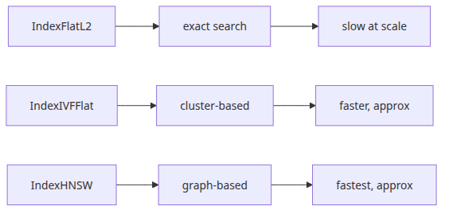
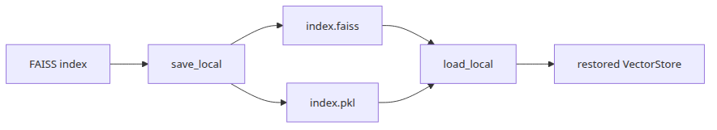

RAG Deep Dive series (2/6)
LangChain code citations in this post are pinned to langchain-ai/langchain @ langchain==0.2.17, and FAISS C++ code citations are pinned to facebookresearch/faiss @ c72ef8a.
Episode 1 argued that chunking is the first failure point in RAG. Episode 2 picks up exactly where that left off. The vector index is not a neutral store. It takes the chunk boundaries we created earlier and turns them into geometry. If a heading and its explanation were preserved in one chunk, they become one vector neighborhood. If an exception clause was split away from the rule it qualifies, that severed boundary is now frozen into the retrieval space. The index does not heal those cuts. It operationalizes them.
That is why embeddings and indexing have to be read together. A production retrieval path is not “embedding model first, then some database.” It is an embedding function, a distance metric, an index structure, and a mapping layer that turns integer search results back into LangChain Document objects. This post follows that full path in source. We will look at how OpenAIEmbeddings calls embed_documents() and embed_query(), what FAISS IndexFlatL2 actually computes inside IndexFlat::search(), how FAISS.from_documents() wires vectors back to documents, when IndexFlatIP and IndexIVFFlat become the better fit, and why persistence in LangChain is also a trust-boundary problem.
OpenAIEmbeddings works and why query/document paths are separateIn LangChain 0.2.17, the familiar OpenAIEmbeddings class lives in langchain_community.embeddings.openai. One source-level detail matters immediately: the class is already deprecated in favor of langchain_openai.OpenAIEmbeddings. It is still a useful baseline because a lot of existing tutorials and pipelines in this release line still follow this code path.

If you read the source closely, the implementation difference between embed_documents() and embed_query() is almost nonexistent. embed_documents() calls _get_len_safe_embeddings(texts, engine=engine). embed_query() simply returns self.embed_documents([text])[0]. So in this pinned implementation, both flows converge on the same machinery.
That does not mean they are conceptually interchangeable. The interface is split on purpose because retrieval models do not always treat documents and queries the same way. In asymmetric retrieval setups, document embeddings are optimized to preserve broad evidence, while query embeddings are optimized to point sharply toward the relevant region of the space. Some providers implement that by routing to different projections, by injecting different instructions, or by using different tuning objectives for query and document representations. That is why LangChain keeps embed_query() and embed_documents() distinct even when a specific provider implementation happens to delegate one to the other.
This is the practical lesson: in 0.2.17 OpenAIEmbeddings, query and document embedding share the same code path, but you should not bake that assumption into your application architecture. If you later switch to a provider or model family with stronger query/document asymmetry, collapsing those two entry points will quietly distort retrieval quality.
The more interesting source function is _get_len_safe_embeddings(). That method tokenizes input text, splits any overlong text into pieces under embedding_ctx_length, embeds those pieces in batches, and then averages the partial embeddings with token-count weights. Finally, it L2-normalizes the result with average / np.linalg.norm(average). So even before FAISS sees a vector, the LangChain wrapper has already made a representational choice: a long chunk is not stored as one raw model output, but as a weighted average of sub-embeddings collapsed back into one normalized vector.
At the API layer, the request shape is straightforward. embed_with_retry() calls embeddings.client.create(**kwargs), and in the OpenAI v1 path _invocation_params carries only model plus any model_kwargs. Auth, timeout, and related transport settings are configured earlier on the openai.OpenAI(...) client object during environment validation rather than packed into this dict. In practice the call shape looks like this:
from langchain_community.embeddings import HuggingFaceEmbeddings
def build_embeddings() -> HuggingFaceEmbeddings:
return HuggingFaceEmbeddings(model_name="sentence-transformers/all-MiniLM-L6-v2")
def demo() -> None:
embeddings = build_embeddings()
doc_vectors = embeddings.embed_documents(
[
"The payment worker retries a failed task three times.",
"The dead-letter queue stores the original payload for inspection.",
]
)
query_vector = embeddings.embed_query("Why did the worker dead-letter the message?")
print(len(doc_vectors), len(doc_vectors[0]))
print(len(query_vector))
if __name__ == "__main__":
demo()
The baseline for the rest of this post is simple. The embedding step is already shaping the geometry. Chunk boundaries matter, long inputs may be averaged, and the query/document split is semantically meaningful even when one concrete implementation collapses it.
IndexFlatL2 actually computesIndexFlatL2 is often described as the simplest FAISS index. That is true, but incomplete. What makes it simple is not just that it is brute-force. It is that it computes the exact L2 comparison against every stored vector and then picks the smallest k results. No pruning, no quantization, no approximation.

In faiss/IndexFlat.cpp, IndexFlat::search() is very direct. If metric_type == METRIC_INNER_PRODUCT, it calls knn_inner_product(...). If metric_type == METRIC_L2, it calls knn_L2sqr(...). That second call is the important part for IndexFlatL2: FAISS is comparing vectors by squared Euclidean distance.
For a query vector q and a stored vector x, the score is:
||q - x||^2 = Σ_i (q_i - x_i)^2
Lower is better. Because the index examines all stored vectors, the result is exact nearest-neighbor retrieval. That exactness is valuable. It gives you a clean baseline when you are trying to separate embedding quality problems from approximate-index problems.
The cost is the classic one: O(n·d) per query, where n is the number of stored vectors and d is the embedding dimension. If you have 100,000 chunks and 1,536-dimensional embeddings, that can still be perfectly practical, especially for offline evaluation or internal knowledge bases with moderate query volume. If you have millions of vectors and latency-sensitive online traffic, the same property becomes expensive fast because every query still touches the full corpus.
This is also where metric semantics matter. Many teams say they are using cosine similarity while the actual implementation is either IndexFlatIP on normalized vectors or IndexFlatL2 on normalized vectors. Those are not identical formulas, but after normalization they can induce closely related rankings. The point is not that one is universally right. The point is that the index is not “just storage.” It is the ranking rule.
This small example shows the mechanical behavior.
import numpy as np
import faiss
def main() -> None:
dim = 4
xb = np.array(
[
[0.1, 0.0, 0.0, 0.0],
[0.0, 0.2, 0.0, 0.0],
[0.0, 0.0, 0.3, 0.0],
[0.9, 0.9, 0.9, 0.9],
],
dtype="float32",
)
xq = np.array([[0.05, 0.0, 0.0, 0.0]], dtype="float32")
index = faiss.IndexFlatL2(dim)
index.add(xb)
distances, labels = index.search(xq, k=2)
print("distances:", distances.tolist())
print("labels:", labels.tolist())
if __name__ == "__main__":
main()
Use IndexFlatL2 when you want exactness and a trustworthy baseline. Stop treating it as neutral infrastructure. It encodes a very specific notion of closeness and pays for it with linear scan cost.
FAISS.from_documents() maps search results back to Document objectsAt the API level, FAISS.from_documents() feels like one convenience call. Under the hood, the path is important. VectorStore.from_documents() in langchain_core.vectorstores.base extracts page_content and metadata from each Document and delegates to from_texts(). In langchain_community.vectorstores.faiss, FAISS.from_texts() embeds those texts with embedding.embed_documents(texts) and then passes everything into the internal __from() constructor.
The actual design has three separate layers.
docstore stores id -> Document.index_to_docstore_id stores faiss_row_id -> docstore_id.That middle layer is the reason similarity search returns a real Document rather than a naked vector id. In similarity_search_with_score_by_vector(), LangChain first calls self.index.search(...). Then for each returned integer i, it looks up self.index_to_docstore_id[i], uses that to fetch the original Document from self.docstore, and only then returns the reconstructed result.
This mapping explains why docstore matters. FAISS itself does not know what a LangChain Document is. It also does not know your metadata schema. The vector index is one subsystem; document reconstruction is another. If the vector store returns the right ids but index_to_docstore_id is stale or corrupted, retrieval can succeed numerically and still fail at the application layer.
One more source-level detail is easy to miss: VectorStore.from_documents() does not preserve Document.id as the FAISS-side key. Unless you explicitly pass ids=..., FAISS.__add() generates fresh UUID strings and uses those as docstore ids.
The source also reveals the default storage choices. __from() constructs IndexFlatIP if the distance strategy is max inner product, otherwise it defaults to IndexFlatL2. The default docstore is InMemoryDocstore(), and the default index_to_docstore_id is an empty dict. In __add(), LangChain converts embeddings into a float32 NumPy array, optionally normalizes it, calls self.index.add(vector), then inserts the paired Document objects into the docstore and builds a contiguous integer-to-id mapping.
This is a realistic example of the full call path.
from langchain_core.documents import Document
from langchain_community.vectorstores import FAISS
from langchain_community.embeddings import HuggingFaceEmbeddings
def build_vector_store() -> FAISS:
docs = [
Document(
page_content="The payment worker retries failed jobs three times before dead-lettering.",
metadata={"source": "runbook.md", "section": "worker"},
),
Document(
page_content="The API gateway returns HTTP 429 when the caller exceeds the per-minute quota.",
metadata={"source": "api.md", "section": "rate-limit"},
),
]
embeddings = HuggingFaceEmbeddings(model_name="sentence-transformers/all-MiniLM-L6-v2")
return FAISS.from_documents(docs, embeddings)
def main() -> None:
vector_store = build_vector_store()
print(type(vector_store.docstore).__name__)
print(vector_store.index.ntotal)
print(vector_store.index_to_docstore_id)
if __name__ == "__main__":
main()
The main operational takeaway is that retrieval bugs can happen in any of these layers. A bad score is not the same as a bad reconstruction, and a bad reconstruction is not the same as a bad metadata filter path.
IndexFlatIP, IndexFlatL2, or IndexIVFFlatThe first FAISS choice is usually the metric. IndexFlatL2 minimizes squared Euclidean distance. IndexFlatIP maximizes inner product. Both are flat indexes, which means both are exact. The difference is not speed class but similarity definition.

If your vectors are L2-normalized, inner product often becomes the easiest route to cosine-style retrieval. That is why many production setups use normalized embeddings plus IndexFlatIP. If you are working with Euclidean structure directly, IndexFlatL2 is the more literal choice.
IndexIVFFlat is the more significant architectural shift. It is not exact search. It partitions the space into nlist coarse cells, assigns vectors to those inverted lists, and then searches only a subset of them at query time. The key runtime knob is nprobe. In faiss/IndexIVF.cpp, search computes cur_nprobe = std::min(nlist, params ? params->nprobe : this->nprobe). That is the number of lists it will open for the current query.
Small nprobe means less work and lower latency, but also a higher chance that the true nearest neighbor lives in a list you never looked at. Larger nprobe pushes recall up and latency with it. That makes nprobe one of the most important practical tuning knobs in approximate retrieval.
My rule of thumb is simple.
IndexFlatL2 or IndexFlatIP when the corpus is still small enough to scan exactly or when you are establishing a clean evaluation baselineL2 and IP based on your metric semantics and normalization strategy, not by habitIndexIVFFlat only when exact search latency is the actual bottlenecknprobe as an operating parameter and measure recall/latency togetherThis example compares exact flat search and approximate IVF search for the same retrieval task: both indexes use the same normalized vectors and the same inner-product metric, so the only moving parts are approximation and nprobe.
import numpy as np
import faiss
def build_indexes(vectors: np.ndarray) -> tuple[faiss.IndexFlatIP, faiss.IndexIVFFlat]:
dim = vectors.shape[1]
normalized = vectors.copy()
faiss.normalize_L2(normalized)
flat_ip = faiss.IndexFlatIP(dim)
flat_ip.add(normalized)
quantizer = faiss.IndexFlatIP(dim)
ivf = faiss.IndexIVFFlat(quantizer, dim, 16, faiss.METRIC_INNER_PRODUCT)
ivf.train(normalized)
ivf.add(normalized)
return flat_ip, ivf
def main() -> None:
rng = np.random.default_rng(7)
vectors = rng.random((2000, 64), dtype=np.float32)
query = rng.random((1, 64), dtype=np.float32)
flat_ip, ivf = build_indexes(vectors)
normalized_query = query.copy()
faiss.normalize_L2(normalized_query)
flat_scores, flat_ids = flat_ip.search(normalized_query, 5)
ivf.nprobe = 1
ivf_scores_low, ivf_ids_low = ivf.search(normalized_query, 5)
ivf.nprobe = 8
ivf_scores_high, ivf_ids_high = ivf.search(normalized_query, 5)
print("flat ip ids:", flat_ids[0].tolist())
print("flat ip scores:", flat_scores[0].tolist())
print("ivf nprobe=1 ids:", ivf_ids_low[0].tolist())
print("ivf nprobe=1 scores:", ivf_scores_low[0].tolist())
print("ivf nprobe=8 ids:", ivf_ids_high[0].tolist())
print("ivf nprobe=8 scores:", ivf_scores_high[0].tolist())
if __name__ == "__main__":
main()
For many teams, exact flat search remains the right choice longer than expected. Use IVF when the scale truly demands it, not because approximate indexes sound more advanced.
save_local() and load_local() really storeLangChain's FAISS wrapper persists state through save_local() and restores it through load_local(). The implementation is important because it stores two different layers in two different formats. save_local() writes the FAISS index with faiss.write_index(...) into an .faiss file, then pickles (self.docstore, self.index_to_docstore_id) into a .pkl file.

The split exists for a good reason. The FAISS index is a C++ object and is not stored as a Python pickle. The LangChain-side reconstruction state is Python-native, so it is stored separately. That means:
.faiss contains the actual vector index data structure and stored vectors.pkl contains the docstore plus index_to_docstore_idThe security-sensitive part is the second file. In 0.2.x, load_local() requires allow_dangerous_deserialization=True before it will unpickle that state. The source explains why in plain terms: pickle files can be modified to execute arbitrary code when deserialized. So the flag exists to force you to acknowledge that loading a saved vector store is not just reading data. It can be equivalent to executing code from an artifact.
That is not an academic warning. Many teams mentally classify retrieval artifacts as harmless data blobs. In this storage scheme, part of the artifact is a Python pickle. If you load an untrusted .pkl in a dev box, CI runner, or production job, you have widened your attack surface.
This is the normal trusted-path example.
from pathlib import Path
from langchain_community.embeddings import HuggingFaceEmbeddings
from langchain_community.vectorstores import FAISS
from langchain_core.documents import Document
def main() -> None:
docs = [
Document(page_content="Rotate secrets every 90 days.", metadata={"source": "policy.md"}),
Document(page_content="Retry HTTP 429 with exponential backoff.", metadata={"source": "api.md"}),
]
embeddings = HuggingFaceEmbeddings(model_name="sentence-transformers/all-MiniLM-L6-v2")
store = FAISS.from_documents(docs, embeddings)
target = Path("artifacts/faiss-demo")
store.save_local(str(target), index_name="knowledge")
restored = FAISS.load_local(
str(target),
embeddings,
index_name="knowledge",
# trusted artifact only
allow_dangerous_deserialization=True,
)
result = restored.similarity_search("How often should secrets be rotated?", k=1)
print(result[0].page_content)
if __name__ == "__main__":
main()
The lesson is bigger than persistence. A retrieval system is not only math and latency. It also has artifact boundaries, trust assumptions, and operational risks.
This episode established the geometry layer of the pipeline. OpenAIEmbeddings may currently route embed_query() through embed_documents(), but LangChain still models them as distinct interfaces because retrieval systems may be asymmetric. IndexFlatL2 is exact search over squared L2 distance, which makes it a strong baseline and an expensive one at scale. FAISS.from_documents() hides a three-layer reconstruction path made of FAISS row ids, a LangChain docstore, and index_to_docstore_id. IndexIVFFlat introduces approximation and turns nprobe into a real operating knob. And persistence is split between .faiss and .pkl, with the latter carrying explicit deserialization risk.
That baseline matters because the next layer is not just “top-k retrieval.” The retriever decides how many candidates to pull, whether to diversify them, and how those vector scores are turned into context. In episode 3, we will stay on the same foundation and follow it into VectorStoreRetriever and MMR.